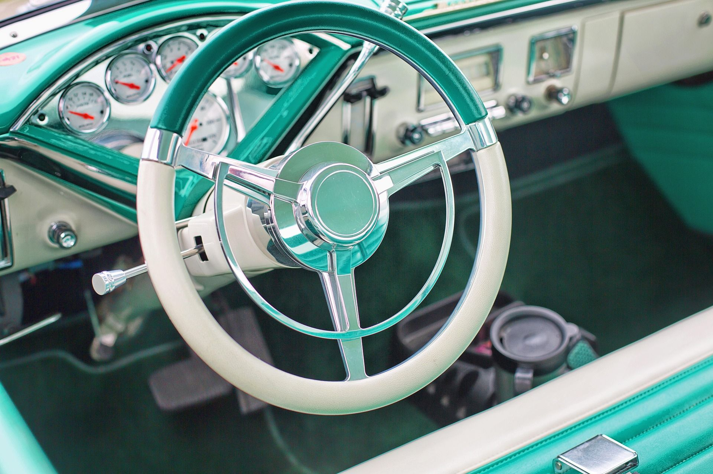

Detailing Tips
How Often Should You Professionally Detail Your Car?
By Rohan Verma · Sep 12, 2026 · 5 min read
The honest answer depends less on the calendar and more on how the car is used, stored and driven. A vehicle parked outdoors near the coast will accumulate contaminants far faster than a garage-kept commuter.
As a general guide, a full exterior detail every eight to twelve weeks keeps paint protected and contamination from bonding to the clear coat, while a lighter maintenance wash every few weeks between visits extends the life of any coating or correction work already done.

Protection only works if it's maintained — a coating is a system, not a one-time fix.
Vehicles with ceramic coatings can typically extend the interval between full details, since the coating itself resists contamination bonding. Even so, a periodic inspection catches.